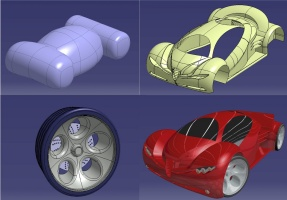

|
 Endüstriyel
ve Kavramsal tasarýmlarda estetik þekiller söz konusu olduðunda,
CATIA - Imagine & Shape 2 (IMA), yepyeni tasarým yaklaþýmýyla
çözümler sunar. Imagine & Shape 2, hýzlý yüzey oluþturmaya
gereksinimi olan herhangi bir iþ dalýnda kullanýlabilir. CATIA
- Imagine & Shape 2 (IMA), yüzey uzmaný olmayanlarýn CAD
sistemi içinde kolayca tasarým yapmasýný saðlayan güçlü teknolojiyi
içerir. Endüstriyel
ve Kavramsal tasarýmlarda estetik þekiller söz konusu olduðunda,
CATIA - Imagine & Shape 2 (IMA), yepyeni tasarým yaklaþýmýyla
çözümler sunar. Imagine & Shape 2, hýzlý yüzey oluþturmaya
gereksinimi olan herhangi bir iþ dalýnda kullanýlabilir. CATIA
- Imagine & Shape 2 (IMA), yüzey uzmaný olmayanlarýn CAD
sistemi içinde kolayca tasarým yapmasýný saðlayan güçlü teknolojiyi
içerir.
Ürünün
tasarýmcýya getirileri:
Ürünleri
deðiþtirmek, stillerini ve performanslarýný geliþtirmek, yepyeni
þekiller oluþturmak, yepyeni özellikler eklemek, yarýnýn ürünlerini
oluþturmak ve bunlarý yaparken sosyo-kültürel trendleri, maliyetleri
ve imalat kýsýtlarýný dikkate almak... Tüm bunlar endüstriyel
tasarýmýn ilgi alanýna girer. Bu geniþ ve kompleks alan içinde
CATIA - Imagine & Shape 2 (IMA), bir þekil kavramýný,
herhangi bir kullanýcýnýn hýzlý ve basit bir þekilde 3D geometrik
modele dönüþtürebilmesini saðlayan devrimsel nitelikte bir
yol sunar. Taslaklama veya prototipleme yapmaksýzýn CATIA
V5 ortamýnda kolayca þekiller oluþturulur. Bu yeni yaklaþým
CAD pazarýnda eþsizdir. CATIA - Imagine & Shape 2 (IMA),
bugüne kadar animasyon dünyasýnda kullanýlagelen ve ilk kez
CAD dünyasýna adapte edilen bir teknolojiyi kullanmaktadýr.
Subdivizyon yüzeyler...
-
Bu teknoloji, kullanýcýlara að (mesh) üzerinde bir þekli
tanýmlayabilmesini ve kontrol edebilmesini saðlar. Kullanýcýlar
bu aðý kullanarak þekilleri lokal veya global olarak kolayca
deforme edebilirler.
- Oluþturulan
yüzeyler gerçektir, açýk veya kapalý olabilirler, keskin
köþeleri destekler ve yüzeyler arasý baðlantýlar G2'dir.
Daha da iyisi bu teknoloji diðer CATIA V5 uygulamalarýyla
uyumlu olarak yüzeyler oluþturulabilmesini saðlar.
- Bu
teknoloji ayrýca hafif bir veri yönetimi ve anlaþýlmasý
kolay bir modelleme metodolojisi sunar.
CATIA
- Imagine & Shape 2 (IMA), subdivizyon yüzeyler teknolojisini
güçlü eðri modelleme altyapýsýyla da destekler. Bu yeni altyapý
kullanýcýya kompleks eðrileri çizmek ve kontrol etmek için
kolay ve doðal bir yol sunar. Bu eðriler yardýmýyla subdivizyon
yüzeyler global deformasyonlar için rahatlýkla kontrol edilebilir.
Eðriler arasý baðlantýlar G3'dür.
CATIA
- Imagine & Shape 2 (IMA) ile:
- Bir
kavramdan direkt yüksek kaliteli yüzeylerle 3D modele geçebilirsiniz,
- Eðriler
yardýmýyla yüzeyleri oluþturabilir ya da iyileþtirebilirsiniz,
- Her
kullanýcýya kolayca stilleme yapma olanaðý sunarsýnýz.
Bir
tasarýmcýnýn perspektifinden fiziksel bir prototipin ana amacý
farklý tasarýmlara bakabilmek ve onay alabilmektir. Bu pahalý
bir yöntem olduðundan tasarýmcý limitli miktarda tasarým alternatifleriyle
yetinmek zorunda kalýr. CATIA - Imagine & Shape 2 (IMA)
modülünü kullanarak, CATIA V5'in foto-gerçekçilik modülleri
yardýmýyla tasarýmcýlar hýzlýca birçok farklý dijital tasarým
alternatifleri oluþturarak iyi örneklerin fiziksel prototiplerini
yapma olanaðý bulurlar.
CATIA
- Imagine & Shape 2 (IMA) modülünü kullanarak;
-
Daha fazla stil çalýþmasýný daha hýzlýca yapabilirsiniz,
- Ýyi
örnekleri bilgisayar ortamýnda belirleyerek fiziksel prototip
sayýsýný ve dolayýsýyla da maliyeti azaltýrsýnýz,
- Yenilikçi
ürünleri daha kolayca tasarlayabilirsiniz.
CATIA
- Imagine & Shape 2 (IMA), CATIA Freestyle Shaper 2 (FSS)
ve CATIA - Generative Shape Design 2 (GSD) gibi diðer V5 modelleme
araçlarýndan gelen modelleri iyileþtirmek amacýyla da kullanýlabilir.
CATIA - Imagine & Shape 2 (IMA) ile, V5'in Knowledgeware
(Bilgi Temelli Tasarým) yeteneklerinden de faydalanarak hýzlýca
þablon þekiller oluþturulabilir; Sonra kullanýcý bu þablon
þekillerden baþlayarak, örneðin ürün aileleri oluþturabilir.
Bir
V5 ürünü olarak, CATIA - Imagine & Shape 2 (IMA), stillemeden
imalata tüm diðer V5 uygulamalarýyla uyumlu olarak çalýþýr.
Örneðin stilizasyon ve mühendislik departmanlarý arasýndaki
data dönüþümü sorununu ortadan kaldýrarak iþbirliði ortamýný
güçlendirir ve modifikasyon döngülerini hýzlandýrýr.
Daha
fazla bilgi için:
www.3ds.com/products-solutions/plm-solutions/catia/...
Ýrtibat:
Grup Otomasyon ve Bilgi Ýþlem Sistemleri Ltd. Þti.
Ataþehir Bulvarý, Gardenya Plaza 3 Kat: 4 No: 22
34758 Ataþehir Kadýköy - Ýstanbul
Tel: (216) 456 47 91
Faks: (216) 456 49 78
Bursa
Büro:
Buttim B5 Blok No 1426 Osmangazi - Bursa
Tel:
(224) 211 41 43
www.grupotomasyon.com.tr
|